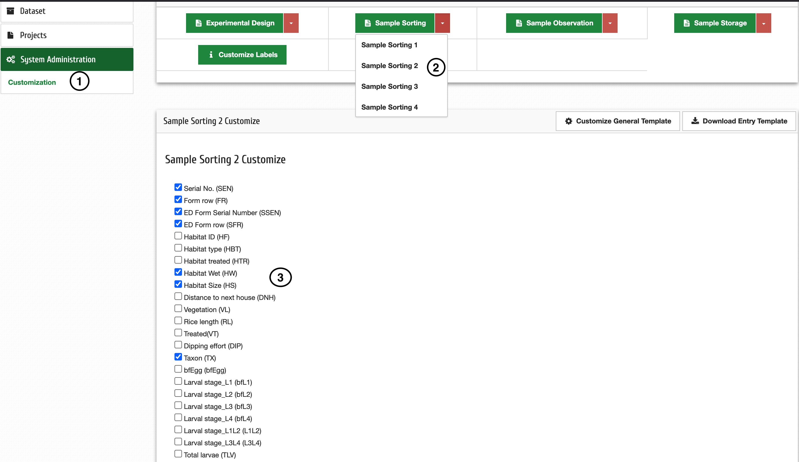
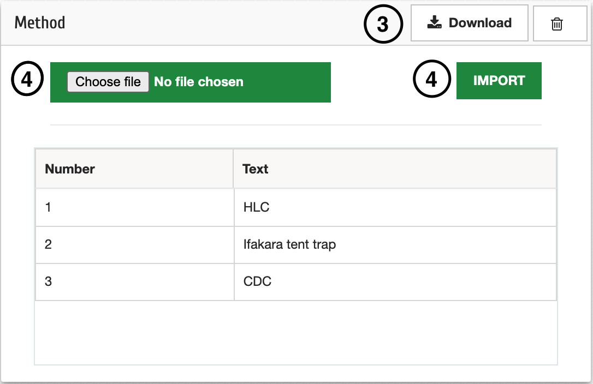
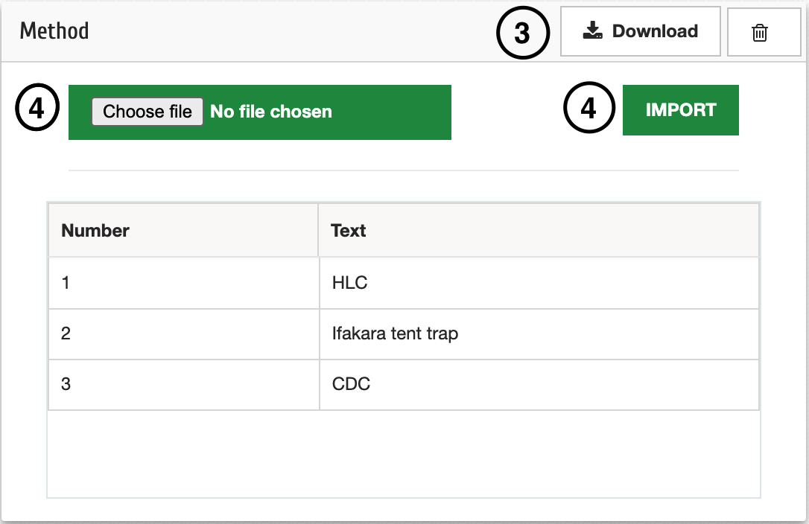

4.2. Mise en place des formulaires¶
Afin de commencer à travailler sur les formulaires, assurez-vous que vous avez d’abord créé un projet en suivant les étapes de 3.1.
Les formulaires sur MosquitoDb sont utilisés comme ci-dessous ;
a: Le plan expérimental 1 est utilisé pour collecter des données sur le terrain
b: Experimental Design 2 collecte à partir de semi-champs
c: Sample Sorting 1 collecte des données sur les moustiques matures
d: Sample Sorting 2 collecte des données sur les moustiques immatures
e: Sample Sorting 3 collecte les données de résistance
f: Sample Sorting 4 collecte des données sur les escargots
g: Echantillon Observation 1 données de laboratoire collectées sur le terrain
h: Echantillon Observation 2 données de laboratoire collectées à partir de semi-terrain
i: Sample Storage 1 collecte les données de stockage sur le terrain
j: Sample Storage 2 collecte les données de stockage à partir du semi-terrain
Après avoir créé un projet, sélectionnez le projet et expérimentez ensuite ;
4.2.1. Personnaliser les champs de formulaire¶
Étape 1: Cliquez sur Administration du système puis Personnalisation
Étape 2: Choisissez les formes que vous souhaitez avoir dans votre expérience, par exemple la conception expérimentale, puis choisissez la conception expérimentale 1 ou 2.
Étape 3: Cochez ou décochez tout champ non obligatoire
Étape 4: Cliquez sur Enregistrer les champs ou sur Supprimer enregistré pour décocher les champs non obligatoires
Faites de même pour tous les formulaires dont vous avez besoin dans votre expérience
4.2.2. Personnaliser le modèle¶
Étape 1: Cliquez sur Administration du système puis Personnalisation
Étape 2: Cliquez sur Personnaliser le modèle général
Étape 3: Cliquez sur Télécharger sur le champ que vous souhaitez personnaliser, par exemple Méthodes
Étape 4: Après avoir modifié les méthodes sur le fichier Excel, cliquez sur Choisir un fichier et choisissez le fichier Excel modifié, puis cliquez sur Importer pour télécharger les données
 
